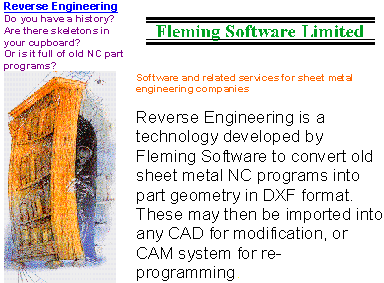
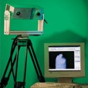
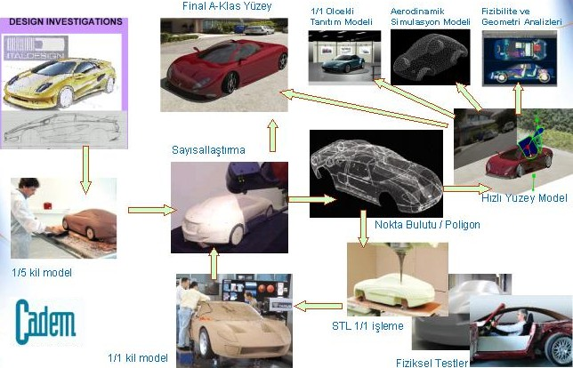
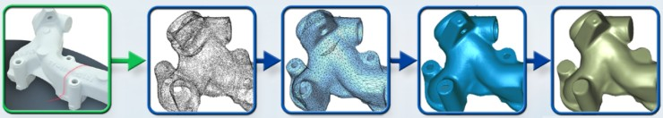

|
TERSÝNE
MÜHENDÝSLÝÐE KUÞ BAKIÞI
"Tersine
Mühendislik" terimi kolaylýkla anlaþýlan anlamlara sahip
deðildir ve çoðu kez karýþtýrýlýr. Örneðin, donaným tersine
mühendisliði, bilgisayar parçalarýnýn de-montaj yapýlarak
nasýl çalýþtýðýný öðrenilmesi ve aynýlarýnýn yapýlmasý amacýyla
kullanýlmaktadýr. Yazýlým tersine mühendisliði ise, bir programýn
kodlarýný çözmek ve programýn bazý kýsýmlarýný kopyalamak,
programýn lisans kodlarýný kýrmak gibi yasal olmayan amaçlarla
da kullanýlmaktadýr. Bu iþlemler pek çok ülkede olduðu gibi,
ülkemizde de yasal deðildir ve "fikir ve sanat eserlerinin
korunmasý" ile ilgili kanunlar uygulamadaki sorunlarýyla
birlikte yürürlüktedir.
"Tersine
Mühendislik" bir makineyi veya nesneyi, kopyalamak veya
geliþtirmek amacýyla veya çalýþma prensibini belirlemek amacýyla
parçalara ayýrmak olarak da tarif edilmektedir. Bu tarif,
özde yanlýþ olmamakla birlikte eksiktir. Örneðin otomobil
endüstrisindeki bir firmanýn, rakip firmanýn otomobilini alýp
bunu parçalara ayýrmasý, daha sonra her bir parçayý inceleyip
test ederek, kendi otomobilini geliþtirmek için bu parçalardan
faydalanmasý tersine mühendisliktir ve yasal olabilir. Ancak,
parçalarýn ayný prensip ve yöntemler kullanýlarak taklit edilmesi
etik olmadýðý gibi, eðer rakip firma tarafýndan patent ile
korunmuþ ise hýrsýzlýkla eþ deðerdir. Bu nedenle, NEDEN-SONUÇ
iliþkisinin çok iyi kurulmasý gereklidir.
Vaktiyle
ülkemizde takým tezgahlarý üreten bir fabrika, Uzakdoðu'dan
getirdiði bir bilgisayar kontrollü (CNC) torna tezgahýný en
küçük parçasýna kadar sökmüþ ve taklit etmeye çalýþmýþtý.
Ancak sonuç hüsran oldu. Taklit etmeye çalýþtýklarý tezgahý
geliþtirmek þöyle dursun, taklit bile edememiþler ve iflasýn
eþiðine doðru sürüklenmiþlerdi. Bu sonuç, bu yaklaþýmýn tek
baþýna yeterli olmadýðýný, modern teknoloji ve bütünleþik
imalat felsefesi olmadan baþarýya ulaþýlamayacaðýnýn bir örneði
olarak tarih sayfalarýndaki yerini almýþtýr. Siz bir makinenin,
tenekelerinin ve diþlilerinin aynýsýný yapabilirsiniz, ama
Murat 124 þasine Mercedes motoru koyamazsýnýz. Oysa, CNC tezgahlarýn
mekanik aksamýn dýþýnda bir de kontrol üniteleri vardýr. Bedenlerin
yanýnda bir de ruhlar vardýr. O ruhu veremezseniz, beden hareketsiz
bir kütleden ibaret kalýr.
Bizim
asýl üzerinde durduðumuz "Tersine Mühendislik",
var olan bir nesnenin tasarým bilgilerinin bulunmadýðý durumlarda,
nesneyi yeniden üretebilmek veya geliþtirebilmek amacýyla,
ürünün üç boyutlu uzayda sayýsal tasarým bilgilerinin elde
edilmesidir. Bu yönüyle, TERSÝNE MÜHENDÝSLÝK uygulamalarýnýn
en önemli elemanlarý þunlardýr,
-
Sayýsallaþtýrýcý/ tarayýcýlar
- Otoinþa
(Hýzlý prototipleme) makineleri
- Tesine
mühendislik yazýlýmlarý
SAYISALLAÞTIRMA
VE TERSÝNE MÜHENDÝSLÝK
Nesnelerin
üç boyutlu ölçümleri kalite kontrol uygulamalarý için vazgeçilmez
bir unsurdur. Parça üzerindeki unsurlarýn paralelliði, dikliði
ve boyutsal toleranslarýnýn doðruluðunun kontrol edilmesi
bu uygulamalar içerisinde yer alýr. Bununla birlikte, bu uygulamalar
genellikle geleneksel üretim sürecinin bir parçasý olarak
ortaya çýkar. TERSÝNE MÜHENDÝSLÝK ise bunun bir adým ötesidir.
Ayný cihazlar üzerinde, sadece ÖLÇÜM deðil, tarama ve sayýsallaþtýrma
da yapýlabilir. Tersine Mühendislik'te ölçüm ve sayýsallaþtýrma/tarama
uygulamalarý içerisine kullanýlan cihazlarý (koordinat ölçme
makineleri, sayýsallaþtýrýcý/tarayýcýlar vb.) iki ana grupta
toplamak mümkündür;
- Temas
ederek (Problu) ölçüm ve sayýsallaþtýrma/tarama yapan cihazlar
- Temas
etmeden ölçüm ve sayýsallaþtýrma/tarama yapan cihazlar
- Lazerli
- Kameralý
(Topometrik Görüþ) sistemleri
Problu
ölçüm cihazlarýnda, ölçüm kolunun üzerinde elmas sertliðinde
bir küre mevcuttur. Bu küre parçanýn yüzeyinde, koordinatlarý
belirlenmesi istenen noktaya deðdiði anda, kolun üzerindeki
koordinat belirleyici sistemi ile, parçanýn o noktadaki konumu,
iþ parçasýnýn geometrik ve boyutsal verileri üç boyutlu uzayda
(x, y, z) elde edilmekte ve cihazýn üzerinde bulunan bilgisayara
aktarýlýr. Problu sistemin dezavantajý, ölçüm alýnabilmesi
için probun yüzeye deðme zorunluluðunun olmasýdýr. Bu zorunluluk
parçanýn karmaþýk þekilli olmasý durumunda, istenen deðerlerin
alýnamamasý sonucunu doðurabilir.
Lazerli
sistemlerde, ölçüm/sayýsallaþtýrma/tarama bir lazer hüzmesi
kullanýlarak gerçekleþtirilir. Parçanýn ölçüm yapýlmak istenen
bölgelerine yollanan lazer ýþýný, kaynaktan gidiþ ve dönüþ
zamanýnýn, ýþýnýn hýzýyla çarpýlmasý sonucu otomatik olarak
hesaplanýr. Koordinatlar yine kolun üzerindeki bir adým koordinat
belirleyici sayesinde alýnýr. Lazerin doðrusal hareket ettiði
dikkate alýndýðýnda düz-yüzey tabir edilen yumuþak yüzeyli
(Arabalarýn kaportalarý vb.) yüzeyler için oldukça idealdir.
Ancak, karmaþýk parçalar için, önerilen bir sistem deðildir.
Bunun nedeni ise lazer ýþýnýnýn geri dönmesini söz konusu
olamayacaðý karmaþýk þekilli ve içsel (delik içerinde) unsurlarý
bulunan nesnelerin katý modelinin oluþturulmasý ya da ölçümlerinin
yapýlmasýnda neden olduðu zorluktur. Bu sistemde veri toplanmasý,
ilerleyen bir lazer ýþýnýnýn, kusursuz üçgen tekniði olarak
adlandýrýlan bir yöntem ile geri dönmesi sayesinde saðlanabilir.
Topometrik
(Kameralý) ölçüm/sayýsallaþtýrma/tarama sistemlerinde, bir
üç-ayaðýn üzerine sabitlenmiþ olan ölçüm/sayýsallaþtýrma/tarama
kafasý, hedef parçanýn yaklaþýk 70-100 cm kadar ön tarafýnda
tutulur. Ölçüm/sayýsallaþtýrma/tarama sýrasýnda parçanýn yüzeyine
kenar oluþumlarýnýn izdüþümlerinin yansýmasý saðlanýr ve bu
izdüþümler, ölçüm kafasý içerisine sabitlenmiþ olan bir kamera
tarafýndan kaydedilir. Dijital görüntü iþlemcisinin yardýmýyla
üç boyutlu koordinatlar yüksek bir hassasiyetle hesaplanýr.
Nesnenin tamamýnýn sayýsallaþtýrýlmasý/taranmasý, birçok ayrý
ölçümlerin bir araya getirilmesi ile oluþur ve bazen birden
fazla görüþ açýsý veya bir baþka deyiþle kamera kullanýlmasý
gerekebilir. Günümüzde, computer-vision yazýlým ve donaným
teknolojisinin geliþimi zor (free form veya sculptred surfaces)
yüzey ve unsurlara sahip nesnelerin modellerinin oluþturulmasýný
mümkün kýlmaktadýr.
Ýþ
parçasýna temas etmeden çalýþan algýlayýcýlarla ölçüm/sayýsallaþtýrma/tarama
iþlemi uzaktan çok kýsa bir sürede tamamlanabildiði halde,
mekanik problar gibi iþ parçasýna temas eden algýlayýcýlar
kullanýldýðýnda iþleme çevrimi durdurulup pozisyonlama yapýlmasý
gerektiðinden, ihmal edilemeyecek bir zaman kaybýna neden
olunmaktadýr. Fiyat bakýmýndan incelendiðinde, iþ parçasýna
temas etmeyen algýlayýcýlarýn diðerlerine göre oldukça ucuz
olduðu görülecektir.
Temaslý/temassýz
sistemlerin hepsi de temelde ayný prensiple çalýþýrlar. Hedef
bir NOKTA BULUTU elde etmektir. Daha sonra bu nokta bulutu
uygun yazýlýmlar ile birlikte anlamlandýrýlýr, uygun yüzeyler
türetilir ve Bilgisayar Destekli Tasarým ve Ýmalat (BDT/BDÜ)
süreçlerinde kullanýlabilecek uygun bir formata dönüþtürülür.
Böylelikle nesnenin model verileri bilgisayar üzerine aktarýlmýþ
olur. Elde edilen yüzey veya katý model üzerinde istenilen
deðiþiklik veya geliþtirmeler yapýlabilir. Model son halini
aldýktan sonra, modelin üretimi için gerekli takým yollarý
ve CNC parça programý elde edilebilir. Ancak, bu son iþlemden
önce bilgisayar üzerindeki modellerin OTOÝNÞA (HIZLI PROTOTÝPLEME)
makineleri ile ön-gerçek modellerinin oluþturulmasý önerilir.
TERSÝNE MÜHENDÝSLÝK ÝÇÝN KULLANILAN YAZILIMLAR
Tersine
Mühendislik, aslýnda ülkemizde yýllardýr uygulanan bir yöntemdir.
Ancak bugüne kadar körü-körüne ve tamamen insan gücü ve beyninin
bazý kabiliyetlerine dayanarak yapýlan uygulamalarda, uygun
tesine mühendislik yazýlýmlarýnýn kullanýlmasý da zorunlu
hale gelmeye baþlamýþtýr. Piyasada bazý güçlü-ticari tesine
mühendislik yazýlýmlarý bulmak mümkündür. CappsNT, Geomagic
Studio, RapidForm, CopyCAD, Imageware ve CATIA bunlardan
bazýlarý olup, Tesine Mühendislik ve kitlesel özel üretim
konusunda Dünya'nýn en çok tavsiye edilen yazýlým paketleri
arasýndadýr. Bu yazýlýmlar ile fiziksel bir nesnenin üç boyutlu
tarama verisi iþlenerek üretim için gerekli yüksek hassasiyet
ve kalitede BDT modeli elde edilebilir. Yazýlýmlar, ayrýca
daha ileri düzeyde çözümler elde etmek için sayýsallaþtýrma
sistemleri ile birlikte kullanýlabilir.

Üç
boyutlu tarama ve algýlama cihazlarý ile elde edilen NOKTA
BULUTLARI, bu yazýlýmlar ile birlikte anlamlandýrýlýr; taranmýþ
nokta verilerden aralýksýz üçgen hücrelerden oluþan modeller
elde edilir (triangulation/polygonisation) ve daha sonra uygun
yüzeyler giydirilir. Doðrulama aþamasýndan sonra, BDT/BDÜ
süreçlerinde kullanýlabilecek uygun bir formatta kaydedilir.

HIZLI
PROTOTÝPLEME TEKNOLOJÝSÝNDE SON DURUM
Üç boyutlu yazýcý/model makineleri günümüzde HIZLI PROTOTÝPLEME
(Rapid Prototyping) makinesi olarak da adlandýrýlmaktadýr.
Hýzlý prototipleme makineleri TERSÝNE MÜHENDÝSLÝÐÝN olmazsa
olmazlarýndan sayýlabilir. Bu makineler üzerinde üç boyutlu
nesneler elde edilmekte olup, bunlar yeni ürün geliþtirme
(YÜG) süreçlerinde kullanýlmaktadýr. Ancak, normal yazýcýlardan
farklý olarak, Dünyada bu cihazlarý üreten belli baþlý birkaç
firma bulunmaktadýr; 3D Systems, Stratasys, Z Corp. vb. gibi.
Bu
firmalarýn ürettiði makinelerin en iyisi þudur ya da en kötüsü
budur demek mümkün deðildir. Her bir makinenin (teknolojinin)
kendine has avantajlarý ya da dezavantajlarý bulunabilir.
Fiyat-performans iliþkisi, bütçe olanaklarý ve makinenin kullaným
amacý göz önünde bulundurularak optimum bir seçim yapýlmasý
gerekir. Yukarýda adý geçen firmalarýn her biri farklý teknolojileri
kullanan Üç Boyutlu Yazýcý/Model makineleri üretmektedir.
Örneðin,
Stratasys firmasý, FDM (Fused Deposition Modelling) metodu
ile üretim yapan ve ABS malzemelerden modeller üretebilen
makineleri üretmektedir. Bu makinenin sarf malzeme fiyatlarý
diðer makinelerinki ile karþýlaþtýrýldýðýnda daha pahalýdýr.
Bu da model fiyatlarýna yansýmaktadýr. Ancak, hassas modeller
bu makine ile rahatlýkla üretebilmektedir, ancak model üretebilmek
için zaman gereksinimi hayli fazladýr. Destek malzemelerinin
çýkarýlmasý zaman almakta ve çevreye zararlý kimyasal kullanýmý
gerektirmektedir. Z Corp. firmasý ise, püskürtme (jet) teknolojisi
ile üretim yapabilen, normal hassasiyetteki modelleri, kýsa
bir sürede ve destek malzemesi kullanmadan yapabilen 3 Boyutlu
Yazýcý/Model makineleri üretmektedir.
Bu
makineler, plaster, elastik malzeme, hassas döküm malzemesi,
niþasta bazlý malzemeler, seramik, ABS vb gibi çok çeþitli
malzemelerden modeller oluþturabilmektedir. Kullandýðý hammaddelerin
içersisinde mm3 fiyatý çok uygun olan malzemeler de mevcuttur.
Bu yüzden, özellikle öðrencilerin, bilgisayarda çizdikleri
modelleri görsel olarak üretmeleri söz konusu olduðunda, bu
büyük bir maliyet avantajý saðlamaktadýr. Eðitimde kullanýmýnýn
yaný sýra, sanayi'de de baþarýlý uygulamalarý mevcuttur. Hýzlý
prototipleme teknolojisine yatýrým yapmak isteyen iþletmeler,
kendi gereksinimlerini göz önünde bulundurarak bir seçim yapmak
zorundadýr.
|